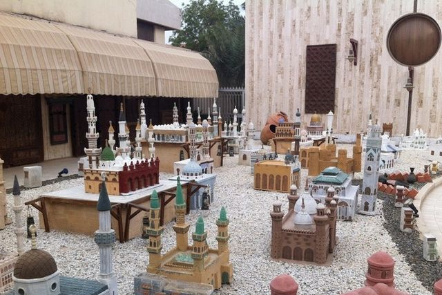
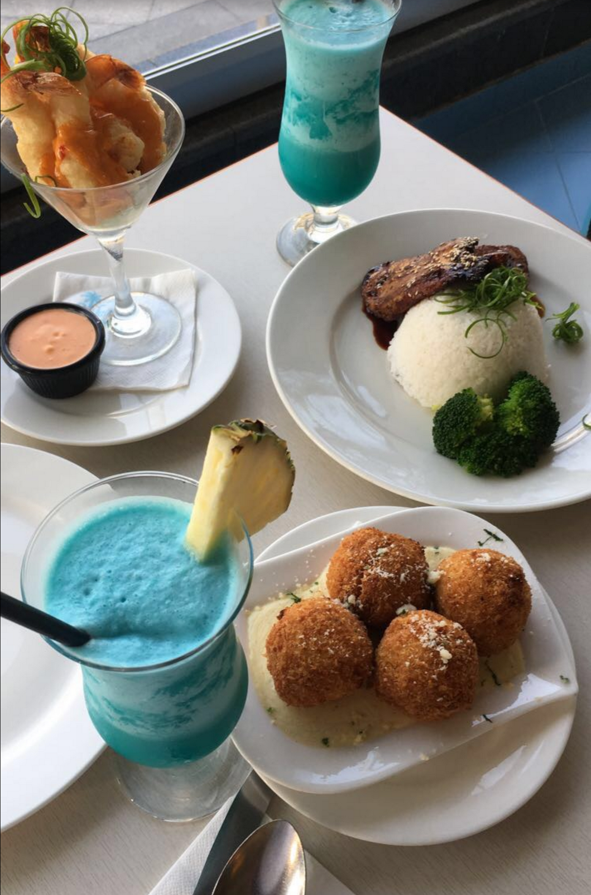
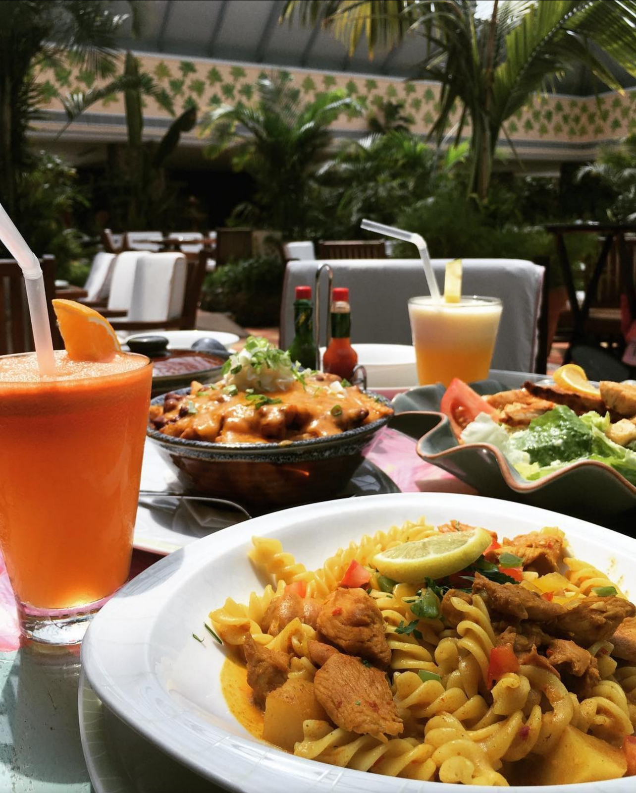
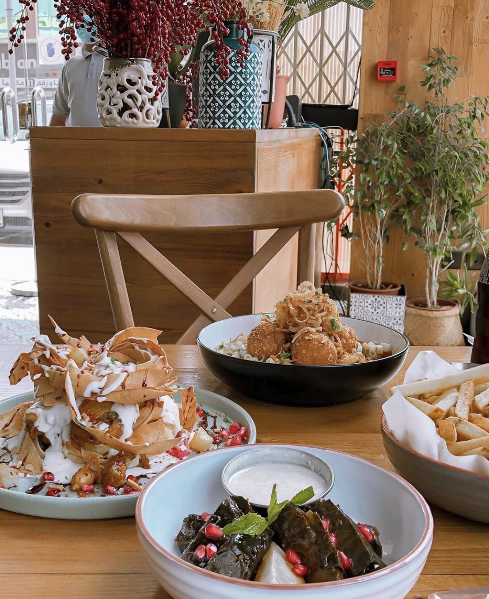

مدينة جدة عروس البحر الأحمر، وأكبر المدن المطلة عليه، تمتاز بموقعها الجغرافي لكونها البوابة المؤدية إلى أقدس الأماكن في العالم، فهي أول محطة يحط فيها الحجاج القادمون من جميع أنحاء العالم في طريقهم إلى مكة المكرمة، عن طريق مطارها الدولي، ومينائها البحري، كما تمتاز جدة بشواطئها الجميلة
نافورة الملك فهد في جدة هي واحدة من اهم معالم السياحة في السعودية ، تقع النافورة على كورنيش الشهير. تم إنشائها عام 1980 واستغرق تشييدها حوالي 3 سنوات وبداً العمل بها عام 1985.تعد نافورة الملك فهد جدة الأطول في العالم وقد سُجلت في موسوعة غينيس للأرقام القياسية، حيث ان المياه فيها تنطلق لتصل الى ارتفاع 312 متر لتوفر المتعة للناظرين من كل أنحاء مدينة جدة ، ما يميز هذه النافورة عن غيرها هو أن ارتفاع المياه فيها يفوق ارتفاع برج ايفل في فرنسا

يعتبر متحف الفنون في جدة من أهم متاحف جدة الثقافية ، ويقع في شارع فلسطين أمام بوابة 11، وهذا المتحف يضم العديد من تراث جدة الثقافي في العصور القديمة وذلك من خلال الأثاث والملابس والأدوات المستخدمة
يتكون المتحف من طابقين، وكل طابق مختص بعرض بعض التحف والمُجسمات، وفي متحف الفنون في جدة لابد من اصطحاب مشرف خاص للتجوّل مع الزائرين لتعريفهم على محتويات المتحف ولا يُمكن تجول السياح بمفردهم
يعتبر متحف الفنون من اشهر اماكن السياحة في جدة
توجد العديد من الانشطة في ملاهي الشلال بجدة ومنها الالعاب المخصصة لجميع الاطفال
منها لعبة جولة في باريس ولعبة مصعد السيارات ولعبة الغواصة المجنونه وهناك الكثير من الالعاب الترفيهية
وايضا يتوفر فيها عدد كبير من الصالات ومنها صالات التزلج
وايضا يوجد فيها العديد من المطاعم
يوجد اكثر من 200 نوع في هذا المعرض البحري الذي يذهب اليه الزوار باستمرار من جميع انحاء العالم
ويمتاز بمميزات تجعله يمتاز عن غيره منها وجود اسماك القرش واسماك الهامور واسماك النابليون ,
وموري وفرس البحر والدلافين
مطعم بيت ورد
مطعم بلو اوشن
 مطعم ميز
مطعم بابايا
فصل الشتاء هو افضل وقت للذهاب الى زيارة جدة حيث تنخفض درجة الحرارة في هذه الفترة الزمنية ويبدأ فصل الشتاء في اكتوبر وينتهي في مارس حيث تكون درجات الحرارة مابين 20 و 30 درجة مؤية
created with
HTML Website Builder .